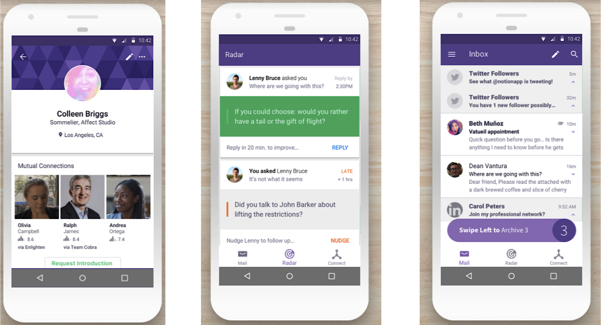
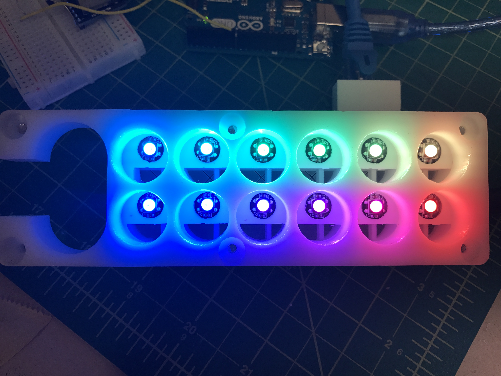
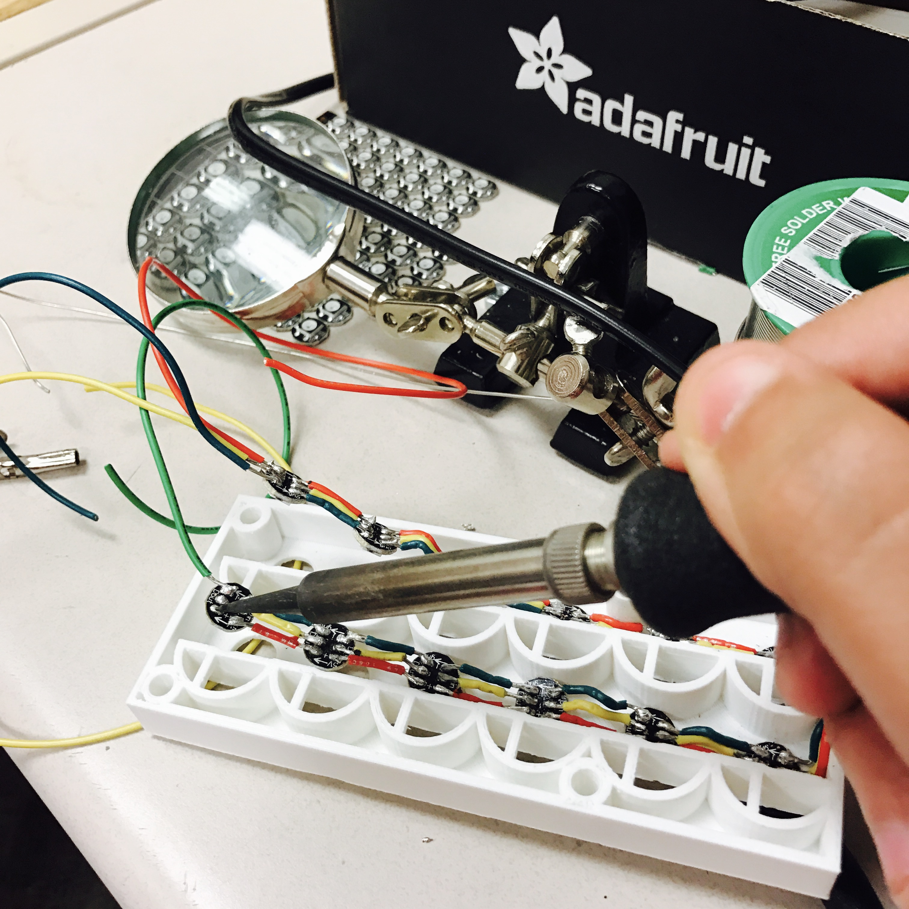
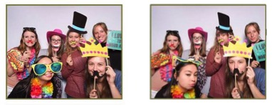

About


Python

C

C++

C#

HTML

CSS
Javascript
PHP

Bootstrap

Git

MySQL

Unity

Fuel

Linux

Elasticsearch

Arduino
Unix • HTTP/REST
Object-oriented programming • Runtime analysis • Regular Expressions • Agile develoment

Data Structures • Algorithms • Computer Security
Computer Architecture • Discrete Math
Trove is a SaaS start-up in Ann Arbor, Michigan that uses artificial intelligence to analyze your email connections, revealing valuable insights to your personal and professional network. I currently work as an software engineering intern on the Cloud team. We are responsible for maintaining the API and backend services. My day to day work consists of implementing new features, squashing bugs, and collaborating with teammates.

Trove company kayaking event, July 2017
Contacts, Radar, and Archive features in the app

My co-founder and I started Arc at the beginning of our Junior year of college. The University of Michigan is a well-know school for research, but we realized that many of the non-engineering labs on campus were lacking research equipment. Walking through these labs we would often find makeshift tools and fixtures. This prompted us to start Arc, in order to connect engineers on campus with researchers in need of custom electronics, 3D printing, and software applications.

Building custom equipment to monitor fruit fly eating habits in response to neural modulation, for the Dus neuroepigenetics lab at U of M.
Gwydion is a virtual and augmented reality software development company. Based in Ann Arbor, MI where our team works to build products that make VR/AR accessible for anybody on any device. I work with our diverse team of engineers, artists, and desginers to provide insight on pricing models and marketing strategies in order to attract potential investors. In addition, I work on budgeting and handling finacial aspects of the business.
 Check out Gwydion featured in Made at Michigan here!
Check out Gwydion featured in Made at Michigan here!
Professor Joanna Milluchick of Materials Science and Engineering, Associate Dean for Undergarduate Education, testing out Gwydion's Crystal Structures App

Styker is a leader in the field of biomeidcal technology. I interned specifically on the product portfolio strategy team, focusing on hip and knee replacements and robotic technology. Our team is the liaison between R&D and product strategy, offering insights into user needs and market trends, advising on future product features and designs. I worked on identifying trends in sales over a 5 year period, gaining insights into growth rates, recommending specific products to remain in Stryker's portfolio based on profit analysis. This resulted in more streamlined and directed product portfolio.

Testing a prototype acetabular (hip) surgical drill

Styker interns volunteering at Camp Acorn, 2016
GWC works to close the gender gap in tech and engineering. I design, lead, and facilitate weekly programming lessons along with team of 5 computer science students at U of M. We teach high school students coding basics, including HTML, CSS, and JavaScript. This culminates in a final project at the end of the year, unique to each student’s interests and coding level.

Peer Mentorship is run throught the Office of New Student Programs at the University of Michigan. I started of as a freshman mentee, and sophmore year became a mentor. Mentors are responsible for planning events with 5+ students and a faculty/staff mentor, and help freshmen acclimate themselves to the new college environment. Junior year I became a Program Coordinator, where I was responsible for facilitating each mentor group, as well as plan program wide events

Photo booth from PM Kickoff 2016

Peer Mentorship program coordinatiors

GEECS is a student organization at U of M that works to promote the professional, academic, and social development of women in technology. GEECS holds biweekly meetings and events throughout the year, ranging from social bonding events to professional development. The org helps to connect women in STEM on campus.

Michigan Women in Computing confrence, 2017

The Hipnotics Belly Dance Ensemble serves to bring belly dance as entertainment and as an educational tool for other students on campus. We perform around campus at various events, as well as teach weekly beginner classes. I've been dancing with HBDE since 2014 when I started as a beginner. I absolutely love belly dance and the cultural of inclusion that HBDE has on campus. As treasurer I have raised several thousands in grants and funding for the team, and will be choreographing this semester's group performance.

Winter Showcase performance
Hossam Ramzy - Khatwet Serena (Serena's Step)